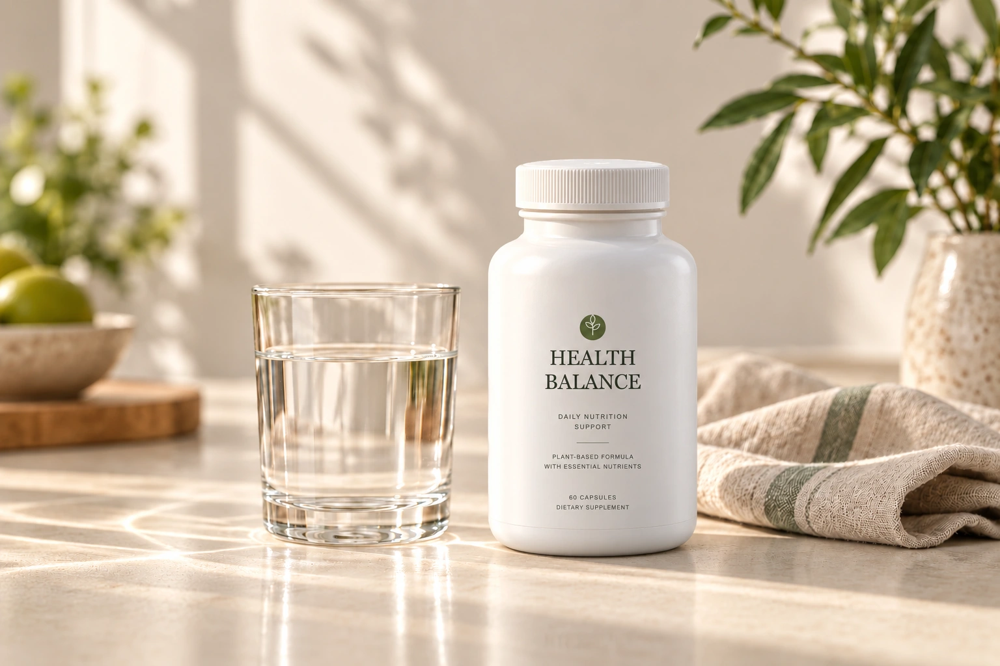
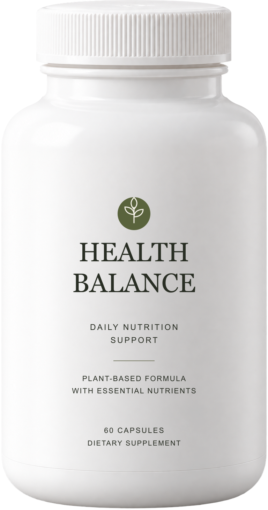
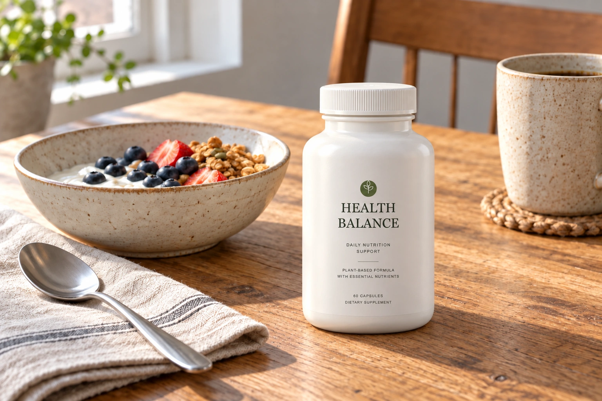
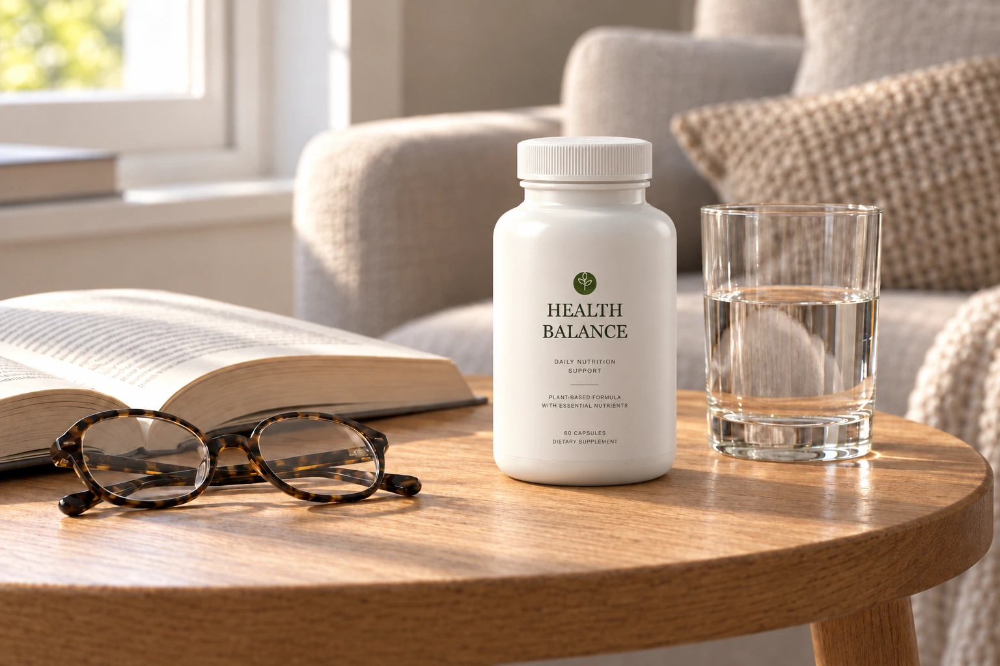
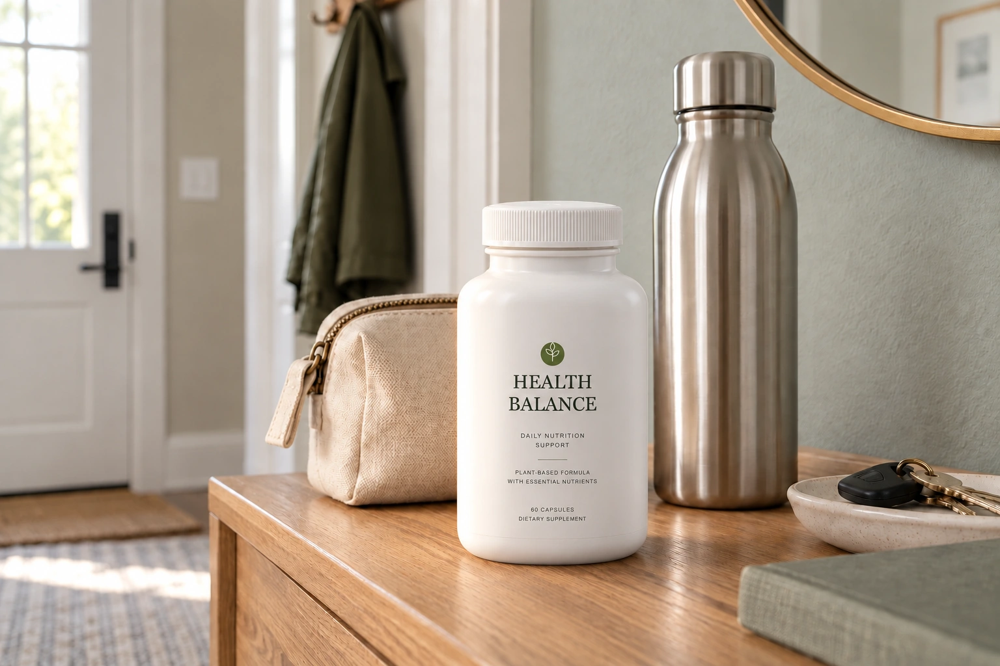

SIMPLE ROUTINE
매일 이어가기 쉬운 간결한 웰니스 습관.
작은 시작을 소중하게 생각합니다.
SMALL RITUALS. EVERYDAY BALANCE.
매일의 균형을 위한 간결한 웰니스 루틴.
THOUGHTFUL NUTRITION. A GENTLER ROUTINE.

EVERYDAY WELLNESS
HEALTH BALANCE는 복잡한 건강 관리보다
매일 이어갈 수 있는 작은 웰니스 루틴에 집중합니다.
잘 먹고, 충분히 쉬고, 나를 돌아보는 시간부터.

ONE SIMPLE ADDITION TO YOUR DAY.HEALTH BALANCE
일상에 더하는 작은 선택.
매일의 식사와 생활을 돌아보는 영양 루틴.
복잡함을 덜고, 나에게 맞는 균형을 생각합니다.
WHY HEALTH BALANCE
매일 이어가기 쉬운 간결한 웰니스 습관.
작은 시작을 소중하게 생각합니다.
일상의 영양 루틴을 고려한 접근.
제품을 이해하는 것부터 시작합니다.
특별한 날이 아닌 매일을 위한 선택.
나만의 생활 리듬 안에서 균형을 찾습니다.

OUR FORMULA
Plant-Based Formula
with Essential Nutrients
ON THE LABEL
패키지에 표시된 정보를 기준으로 소개합니다.
Concept Data / Sample Information — 가상 브랜드의 패키지 정보 디자인 예시이며 실제 성분·함량을 안내하지 않습니다.

THE EVERYDAY BALANCE CAMPAIGN
거창하지 않아도 괜찮아요.
매일의 작은 선택이 더 나은 균형을 만듭니다.
WELLNESS JOURNAL
나를 돌보는 일, 어렵지 않게.
바쁜 아침에도 식탁에 앉는 짧은 시간을 만들어 보세요. 오늘의 식사와 일정을 살피고, 이어갈 수 있는 작은 습관 하나를 골라보는 것부터 시작합니다.
제품을 일상에 더할 때에는 패키지의 섭취 방법과 주의사항을 먼저 확인하세요.

DAILY BALANCE새로운 습관은 익숙한 일상과 가까이 두어보세요. 하루를 준비하는 시간이나 잠깐 쉬는 순간에 나를 돌아보는 순서를 더합니다.
완벽한 계획보다, 오늘 할 수 있는 작은 선택. 식사와 휴식을 함께 챙기며 나에게 맞는 리듬을 찾아보세요.
A LITTLE CLARITY
매일 이어갈 수 있는 작은 웰니스 루틴을 제안하는 브랜드입니다. 대표 제품은 Daily Nutrition Support이며, 식사와 휴식 등 일상 전체의 균형을 중요하게 생각합니다.
패키지 표기 기준으로 한 병에 60캡슐이 들어 있습니다. 이는 내용량이며, 복용 기간이나 하루 섭취량을 의미하지 않습니다.
먼저 제품의 섭취 방법과 주의사항을 확인하세요. 현재는 섭취량이 확정되지 않아 구체적인 복용 횟수나 수량을 안내하지 않습니다.
현재 공개된 패키지 정보는 Plant-Based Formula with Essential Nutrients입니다. 구체적인 성분명·함량·인증 정보는 확정되지 않았습니다.